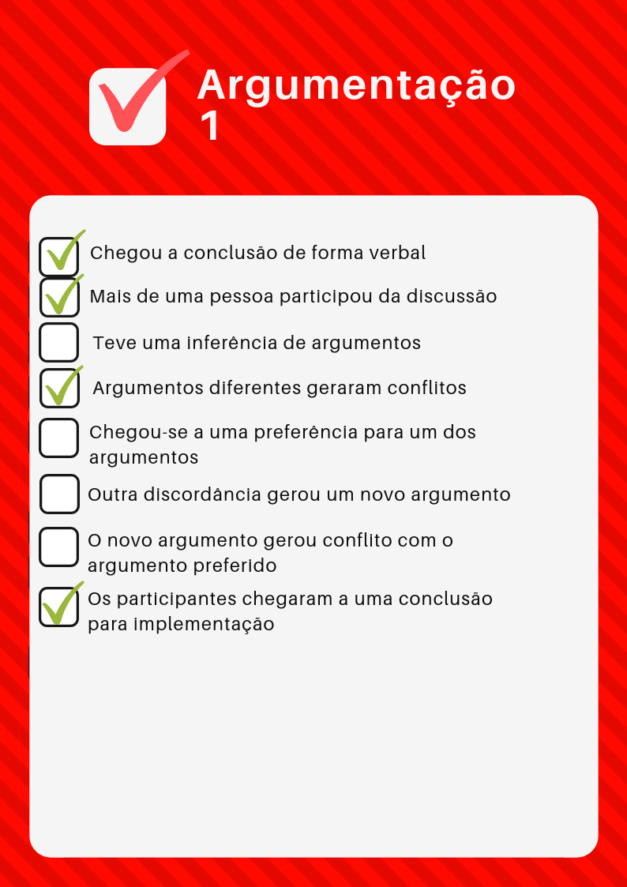
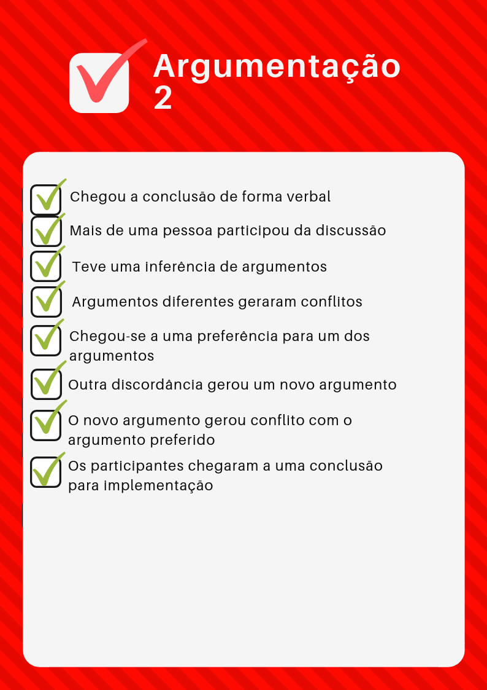
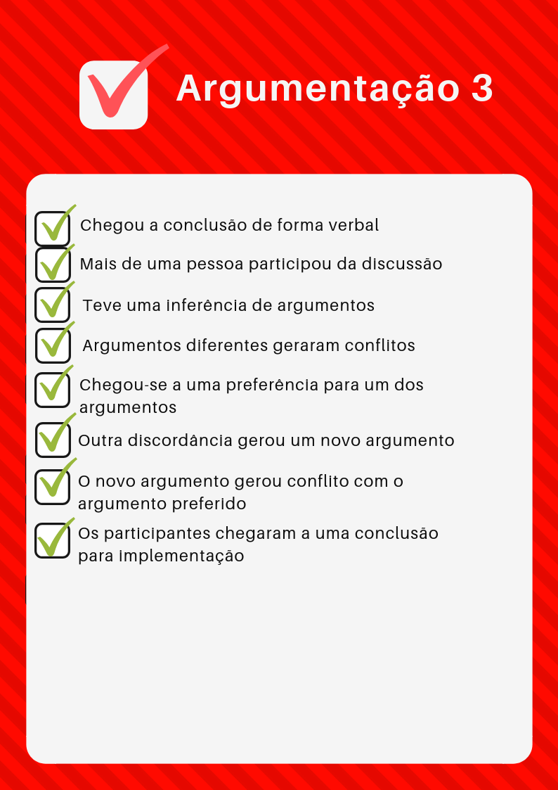

Análise da Pré-rastreabilidade
Foram analisados todos os rich pictures e argumentações postadas neste repositório até a presente data (03/11/2018). O método utilizado foi uma checklist que possui pontos importantes para a implementação de um bom rich picture e uma boa argumentação. Estes pontos foram inferidos do material de aula de Requisitos de Software.
Rich Picture
Pin
| Número | Critério de sucesso | Sim/Não | Melhorias |
|---|---|---|---|
| 1 | A simbologia está coerente? | S | |
| 2 | Existe equilíbrio entre palavras e desenhos? | N | Os textos precisam completar mais aquilo que os ícones querem passar |
| 3 | Os atores estão bem definidos? | N | Não fica bem definido quem pratica cada processo, apenas alguns possuem um ator |
| 4 | O fluxo e as operações fazem sentido? | N | As setas poderiam ter uma descrição da ação |
| 5 | Possui operações suficientes para atender a proposta? | S | |
| 6 | Usa linguagem compreensível? | S | |
| 7 | Possui rastreabilidade? | N | Não indica de onde surgiram as operações |
Pins Especiais
| Número | Critério de sucesso | Sim/Não | Melhorias |
|---|---|---|---|
| 1 | A simbologia está coerente? | S | |
| 2 | Existe equilíbrio entre palavras e desenhos? | N | Necessita de mais textos explicativos. |
| 3 | Os atores estão bem definidos? | N | Não ficou claro quem são os atores, poderia ter uma descrição em texto. |
| 4 | O fluxo e as operações fazem sentido? | N | Os itens ficaram "jogados" pela imagem, necessitando de mais operações para interligá-los |
| 5 | Possui operações suficientes para atender a proposta? | N | |
| 6 | Usa linguagem compreensível? | S | |
| 7 | Possui rastreabilidade? | S |
Usuário
| Número | Critério de sucesso | Sim/Não | Melhorias |
|---|---|---|---|
| 1 | A simbologia está coerente? | S | |
| 2 | Existe equilíbrio entre palavras e desenhos? | S | |
| 3 | Os atores estão bem definidos? | S | |
| 4 | O fluxo e as operações fazem sentido? | S | |
| 5 | Possui operações suficientes para atender a proposta? | N | Um usuário pode fazer muito mais dentro do sistema. Poderia ser quebrado em vários rich pictures |
| 6 | Usa linguagem compreensível? | S | |
| 7 | Possui rastreabilidade? | N | Não indica de onde surgiram as operações |
Pin
| Número | Critério de sucesso | Sim/Não | Melhorias |
|---|---|---|---|
| 1 | A simbologia está coerente? | S | |
| 2 | Existe equilíbrio entre palavras e desenhos? | N | |
| 3 | Os atores estão bem definidos? | N | |
| 4 | O fluxo e as operações fazem sentido? | N | |
| 5 | Possui operações suficientes para atender a proposta? | S | |
| 6 | Usa linguagem compreensível? | S | |
| 7 | Possui rastreabilidade? | N | Não indica de onde surgiram as operações |
Aba Salvos
| Número | Critério de sucesso | Sim/Não | Melhorias |
|---|---|---|---|
| 1 | A simbologia está coerente? | S | |
| 2 | Existe equilíbrio entre palavras e desenhos? | N | Alguns ícones não possuem descrição e podem não ser intuitivos |
| 3 | Os atores estão bem definidos? | N | Deve explicitar o ator |
| 4 | O fluxo e as operações fazem sentido? | S | |
| 5 | Possui operações suficientes para atender a proposta? | S | |
| 6 | Usa linguagem compreensível? | S | |
| 7 | Possui rastreabilidade? | N | Não indica de onde surgiram as operações |
Usuário vendedor e usuário comum
| Número | Critério de sucesso | Sim/Não | Melhorias |
|---|---|---|---|
| 1 | A simbologia está coerente? | S | |
| 2 | Existe equilíbrio entre palavras e desenhos? | S | |
| 3 | Os atores estão bem definidos? | S | |
| 4 | O fluxo e as operações fazem sentido? | S | |
| 5 | Possui operações suficientes para atender a proposta? | S | |
| 6 | Usa linguagem compreensível? | S | |
| 7 | Possui rastreabilidade? | N | Não indica de onde surgiram as operações |
Pinterest e entrega de conteúdo ao usuário
| Número | Critério de sucesso | Sim/Não | Melhorias |
|---|---|---|---|
| 1 | A simbologia está coerente? | N | O quadrado não ficou claro sobre do que se tratava |
| 2 | Existe equilíbrio entre palavras e desenhos? | S | |
| 3 | Os atores estão bem definidos? | S | |
| 4 | O fluxo e as operações fazem sentido? | S | |
| 5 | Possui operações suficientes para atender a proposta? | N | A proposta foi muito pouco explorada |
| 6 | Usa linguagem compreensível? | S | |
| 7 | Possui rastreabilidade? | N | Não indica de onde surgiram as operações |
Argumentação
A argumentação nos apresenta um caminho até a aplicação da metodologia, no caso é onde começa a pré rastreabilidade do rich picture. Nela se coloca os diálogos entre o grupo que mostram como chegou-se na escolha de construir o rich picture daquela forma. Pela análise, pode-se ver se atendeu a toda metodologia da argumentação, que seria a inspeção como forma de verificação.
Metodologia
A técnica de Argumentação consiste em argumentos diferentes discutidos entre um grupo de pessoas, fazendo com que gere conflitos de ideias, e por uma resolução decidida pelo grupo acarrete em uma preferência por uma ideia. Novos argumentos podem gerar conflitos ou acrescentar com o antigo escolhido, e então o grupo chega a uma ideia que atende a todos.
Argumentações Analisadas
Foram analisadas as argumentações de 6 integrantes do grupo.
| Argumentações analisadas |
|---|
| Alexandre Miguel |
| Daniel Mike |
| Geovana Ramos |
| Guilherme Guy |
| Helena Bretas |
| Letícia Meneses |
Critérios de Avaliação
-
"Chegou a conclusão de forma verbal"
- Prioridade Alta
-
"Mais de uma pessoa participou da discussão"
- Prioridade Alta
-
"Teve uma inferência de argumentos"
- Prioridade Alta
-
"Argumentos diferentes geraram conflitos"
- Prioridade Alta
-
"Chegou-se a uma preferência para um dos argumentos"
- Prioridade Alta
-
"Outra discordância gerou um novo argumento"
- Prioridade Baixa
-
"O novo argumento gerou conflito com o argumento preferido"
- Prioridade Alta
-
"Os participantes chegaram a uma conclusão"
- Prioridade Alta
Argumentação 1
Analisando a Argumentação 1, podemos ver onde ocorreram falhas nas adequações do modelo de Argumentação.

Embora tivesse argumentos, conflitos e preferências, o caso analisado não tinha um segmento entre eles, não deixando claro a conclusão para implementar o Rich Picture. Dessa forma essa argumentação não segue completamente o modelo.
Argumentação 2
Analisando a Argumentação 2, vemos que todos os casos que seguem o modelo de Argumentação foram atendidos.

Mostra então que os argumentos dos participantes não foram unanimes, gerando conflito entre eles, podendo ter ocorrido uma votação ou um convencimento, gerando uma preferência a um dos argumentos. E novos argumentos surgiram e passaram pelo mesmo processo ou inferiram com outros, até que os participantes chegaram a uma conclusão para a implementação.
Argumentação 3
Analisando a Argumentação 3, vemos que todos os casos que seguem o modelo de Argumentação foram atendidos.

Tiveram argumentos contrários, gerando conflitos e resultando em preferências, o argumento preferido nesse caso teve uma inferência com um novo argumento, ficando sobre o consentimento de todo o grupo.
Argumentação 4
Analisando a Argumentação 4, vemos que todos os casos que seguem o modelo de Argumentação foram atendidos.
A argumentação analisada remete a resultados satisfatórios para o grupo, aborda argumentos diferentes de cada participante, que gerou um longo debate incluindo conflitos e preferências por argumentos, este então inferiu com argumentos que gerou unanimidade entre o grupo, escolhendo assim a melhor forma de implementação do Rich Picture
Argumentação 5
Analisando a Argumentação 5, ocorreram falhas no atendimento do modelo.

O argumento analisado, embora contenha partes do modelo, não tem uma conexão entre eles. O conflito gerado favoreceu o argumento não desejado, ocorrendo um erro na preferência do argumento. A conclusão então não veio de um conflito ou preferência, e se perdeu a rastreabilidade.
Argumentação 6
Analisando a Argumentação 6, vemos que todos os casos que seguem o modelo de Argumentação foram atendidos.
Pode-se notar que o caso seguiu o proposto pelo modelo de Argumentação, os argumentos seguiram a linha do conflito e preferência, resultando em um argumento que inferiu com um novo, e foi sobre o consentimento de todos da equipe, que concluíram a melhor forma de implementar.
Pelas prioridades dos critérios seguem os argumentos que atenderam ao modelo
| Atendem o modelo |
|---|
| Argumento 2 |
| Argumento 3 |
| Argumento 4 |
| Argumento 6 |